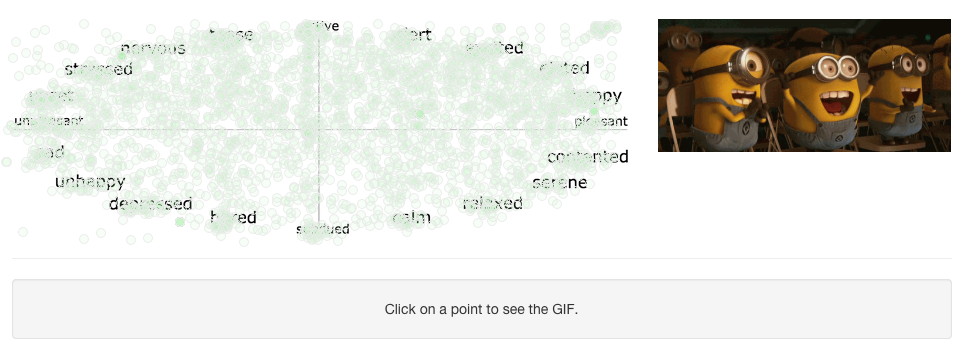
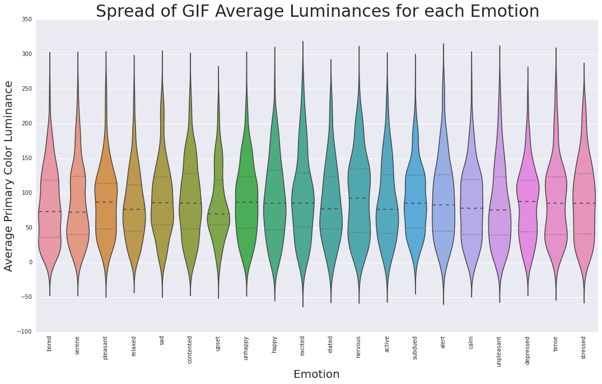
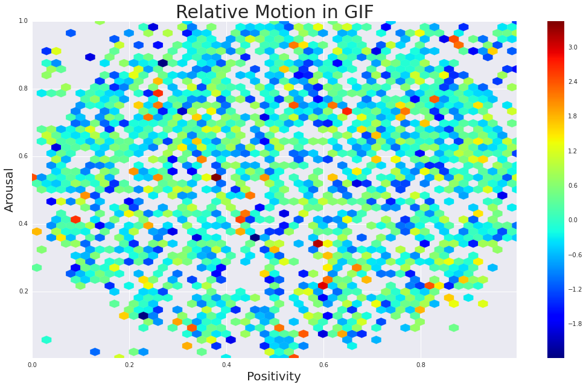

Overview
In this project, we set out to create a GIF recommender that can recommend relevant GIFs from an input piece of text. The current method of finding GIFs relevant to text is to use some sort of search engine for GIFs, which takes time and effort. The goal was to use our knowledge of Data Science to create a GIF recommender that is both easy to use and that quickly recommends GIFs that are relevant to the input text, without much effort on the part of the user. We realized that the corpus of GIF "listicles" on BuzzFeed made for the perfect training set of text associated with a large number of GIFs. We also realized that classifying a GIF with a specific emotion or range of emotions is a task that cannot be done very well by machine learning algorithms alone.
With the ultimate goal of creating a GIF recommendation engine, we realized a number of intermediate goals during the course of our project. As no large dataset of GIFs classified according to sentiment is currently available, we sought to explore a variety of exploratory questions in pursuit of characterizing the general nature of GIFs. Some of these initial questions included: Is there a relationship between GIF color and sentiment? Is there a relationship between the total amount of movement in a GIF and sentiment? Are GIF sentiments fairly uniform in valence-arousal space, or are certain sentiments more likely to be captured in a GIF than others? We offer answers to these questions in this project.
Click here to view the iPython Process notebook for this project.

Methodology
We initially used crowdsourcing as a way of analyzing GIF sentiment, and asked our friends to place GIFs that we had scraped from Buzzfeed on a graph with axes of valence and arousal. We then categorized the GIFs based on content analysis of each GIF's label text, as well as sentiment analysis from the label text and crowdsourced emotion categorization.
Finally, to aggregate our tuned sentiment and content analysis into a refined recommendation engine, we implemented the following workflow for when a query text is inputted:
- Use content analysis on the query to find all GIFs with relevant content.
- Do sentiment analysis on the query to place the phrase on the sentiment plane.
- Return the result from the content analysis step that is closest on the sentiment plane to the coordinates of step (2).
- If there are no content analysis results, default to the closest GIF to the sentiment coordinate.
Results
Crowdsourcing GIF Sentiment
Within 24 hours of launching our GIF sentiment crowdsourcing application, we received 4000 responses. We were thrilled and surprised to receive such a positive and quick response. Since the GIFs were randomized, we observed that most of the rated GIFs had 1 or 2 ratings, while some outliers had a few more. The crowdsourcing application continues to accept responses presently so we can update our algorithms' efficacy in the future.

GIF Sentiment and Luminance
Luminance is a metric for describing the "brightness" of a color as calculated by how our eyes perceieve each of the three components of light (Red, Green, Blue).
In our luminance analysis, we applied the luminance equation to each pixel in each frame of each GIF and found the average luminance of each GIF for each category.
Note that the categories with the highest average luminances are generally the one that are the most active. Specifically, the happy, excited, and elated categories have above average luminances, whereas the upset and unpleasant categories have below average luminances.

GIF Sentiment and Motion
We devised an algorithm to quantify the amount of motion in a GIF by looking at pixel-by-pixel changes between each frame, averaged over all frames. We hypothesized that GIFs higher in arousal would be higher in motion. However, based on the analysis shown, there appears to be no obvious correlation between motion and GIF sentiment.

Click here to view the iPython Process notebook for this project.
Conclusion
In this project, we created the first crowdsourced dataset of GIFs with their corresponding sentiment. We used this dataset to characterize GIFs as they are found on Buzzfeed, drawing out correlations between GIF sentiment and color scheme, luminance, and motion. We then created a framework for mapping textual input to the same sentiment space as our GIFs, followed by a mechanism for identifying relevant content in the textual input. Combining these components, we accomplished our goal of creating a GIF recommendation engine. While the problem of GIF recommendation is inherently qualitative and thus resistant to empirical accuracy analyses, we tested the recommendation engine on a huge variety of inputs and were very satisfied with the results. Since the framework we have established here is amenable to extension, we look forward to refining and improving the algorithm as our crowdsourcing continues. In future work, we would also like to explore other algorithms for recommending a GIF based on sentiment and content, especially through a score function that combines a sentiment score and a content score for a total score. We are grateful to CS109 for the chance to pursue such a fun and rewarding project, and for providing us with the intellectual and programmatic tools to do so.